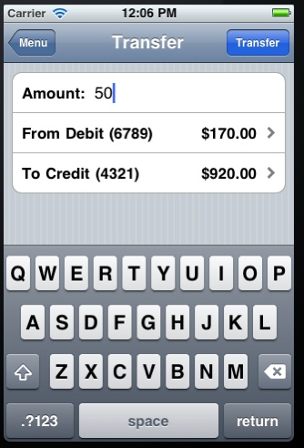

Lab 2 - Parameter manipulation
The parameter manipulation lab is contained within the bank transfer section.
The purpose of this lab is to demonstrate that many common iPhone applications still rely on traditional web architectures or REST interfaces in the back end to perform their tasks. Often, if you're able to trap the request, you can make the application or server act in ways it may not have felt possible.
First, enter the bank money transfer screen within the ExploitMe Mobile app.

There are a number of accounts preconfigured in EMM's default Lab server configuration. We've logged in above using the jdoe account, but there are others including the following:
jdoe / password
bsmith / password
The accounts are:
123456789|debit
987654321|credit
111111111|debit
22222222|credit
In this lab, we'll try to transfer money between accounts on the server by intercepting the EMM app request. Again, this traditionally isn't any different from web exploits, but most apps work in the same manner so it'll be good to see how it works on the mobile app space.
Fill in the transfer screen and ensure your proxy is trapping the request.

We'll transfer $50 between our accounts. Hit the transfer button and trap the request.

You can see that the app is sending the request to the web server through a standard HTTP POST. Often with these mobile applications they will either be POSTs with a session key or a Web service XML request.
We can now modify the "from_account" field to see if we can transfer from another account into our own!

Notice that the from account is now from another user.